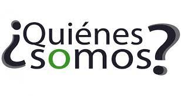

“El verdadero progreso es el que pone la Tecnología, al alcance de todos”
Henry Ford
Menú de Opciones:

En el desarrollo profesional es esencial cultivar y fortalecer la ética y el autoaprendizaje, adquiriendo los códigos de valores que se aplican para guiar nuestro comportamiento, ya que es la base principal para nuestro vinculo con la sociedad, los objetivos de la ética es amparar la sana convivencia y el buen vivir, preservando al ser humano como un ser con principios con su dignidad humana.
La sociedad en la cual vivimos no es factible funcionar sin responsabilidad, respeto y justicia, ya que al momento de que se nos asigne una funcion dentro de un trabajo debemos realizar la labor con constancia y estabilidad durante el lapso de tiempo del contrato.
La honestidad está enlazada con la verdad y el respeto, ya que con este valor se nos es posible vivir de acuerdo a nuestros principios y valores, siendo acorde con nuestros pensamientos y acciones para nuestra vida profesional.
Los principios y valores de nuestra sociedad están en declive que están desfavoreciendo el bienestar del entorno que rodea, es por esto que debemos tomar conciencia de que los valores se están perdiendo y más bien rescatarlos y ponerlos en practica no solo en los sitios que nos favorecen sino en toda la sociedad, ya que así podremos fomentar la ética para ser profesionales que sumen no que resten.
Es útil para nuestro desarrollo profesional el autoaprendizaje ya que salimos de la zona de confort para seguir adquiriendo más conocimientos y así poder desarrollar habilidades y aptitudes para nuestro aprendizaje.
Aprender a aprender, hace referencia a la disposición de aprender por si mismos, indagando temas de nuestro interés para fortalecer nuestras competencias dentro del plano profesional siendo personas competentes, ya que vivimos en una sociedad en donde lo que prima es el conocimiento y para ello debemos seguir cultivando los valores y fortaleciendo nuestro autoaprendizaje.
En definitiva, se debe seguir cultivando y fortaleciendo la ética y el autoaprendizaje porque es parte fundamental para el desarrollo del futuro profesional.
El autoaprendizaje se comprende al ciclo en el que el estudiante construye su conocimiento y determina el camino apropiado para conseguir sus metas propuestas.
Las estrategias para desarrollar habilidades de autoaprendizaje son:
Estudiar en un ambiente apropiado para mejorar la concentración.
Empezar estudiando los aspectos programados, utilizando las técnicas de la lectura comprensiva, lectura analítica, y la autoevaluación.
Perfeccionar un aprendizaje activo, tales como realizar resúmenes, la técnica del subrayado, bosquejos, mapas conceptuales, mapas mentales, diagramas, gráficos, anotar lo más relevante, esquemas, infografías, etc, encontrando así una mejor estrategia de aprendizaje que se adapte a nuestra prioridad de aprendizaje.
Otra estrategia relevante es el tiempo, debemos organizar nuestro tiempo de tal forma que podamos ir resolviendo todas las actividades propuestas.
Comer saludable, realizar ejercicios físicos y mentales.
Descansar bien, ya que es muy imprescindible para estimular el descanso cerebral para así poder acrecentar la creatividad y sobre todo para tener un buen desempeño de la memoria.
Tener motivación para realizar nuestras metas.
Teniendo como norte nuestro aprendizaje es importante que nos orientemos en las actividades que promueven mejoras en los resultados, para así de forma estratégica poder ahorrar tiempo y agotamiento.
Una estrategia que siempre utilizo es la memorización, de contenidos por medio de palabras claves, me ayuda a recordar lo estudiado, otra la técnica que empleo es la del subrayado, el orden y espacio adecuado para estudiar.
Las estrategias que me comprometo a cultivar es realizar resúmenes, mapas mentales, esquemas, bosquejos, a su vez mejorar mi habito de la lectura para mejorar mi vocabulario.
Nosotros todos los días aprendemos, no solamente en las instituciones educativas, sino en nuestra vida diaria y nuestro empeño de aprendizaje que lo vamos adquiriendo de forma natural a través de las experiencias que vamos logrando.